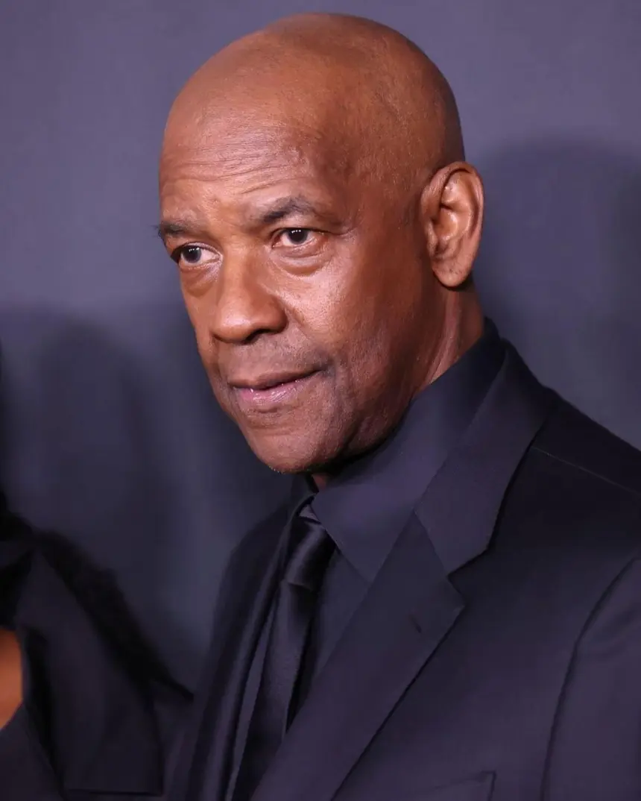
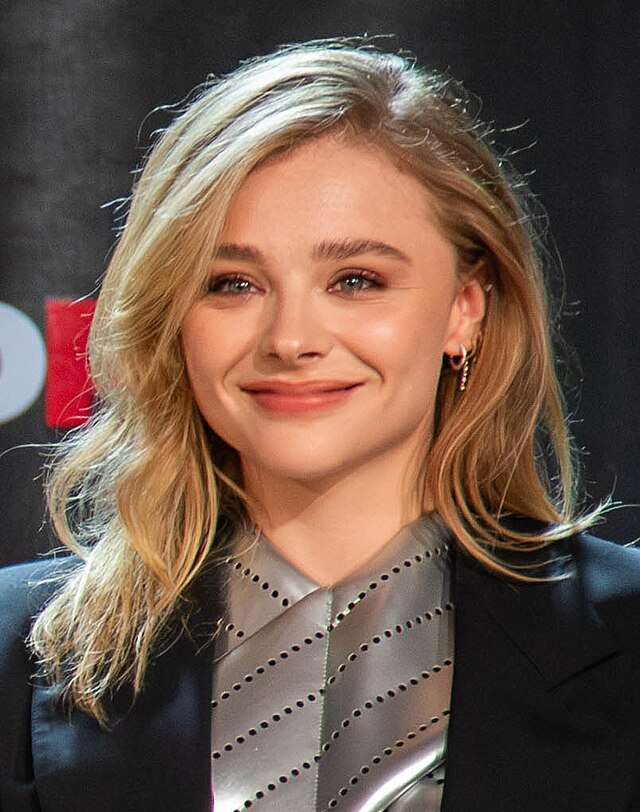
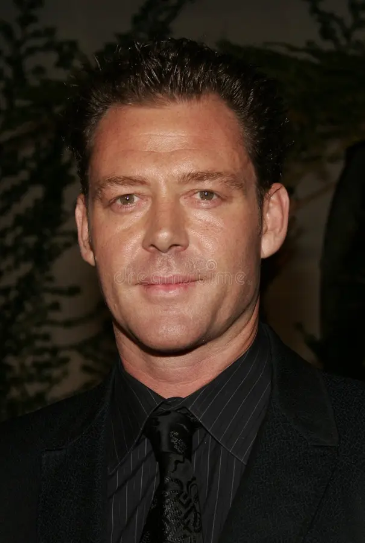
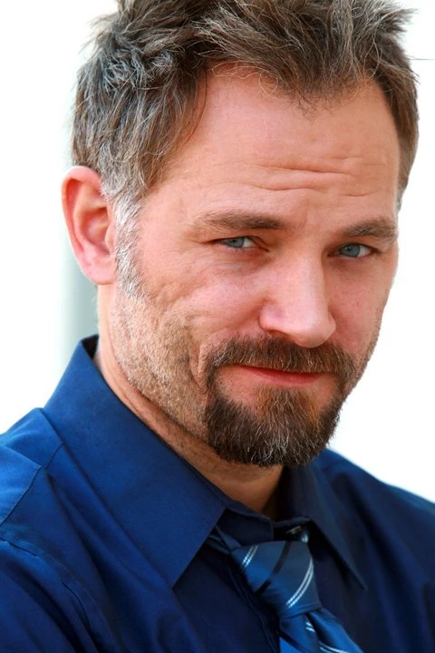
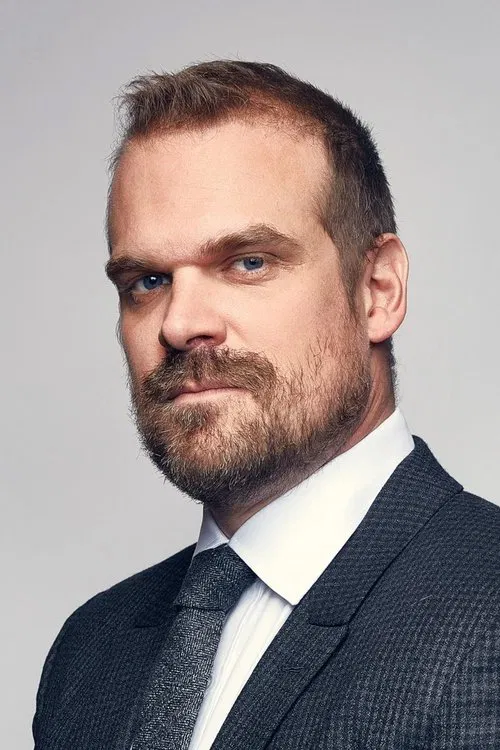
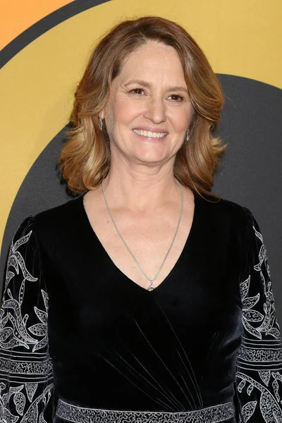
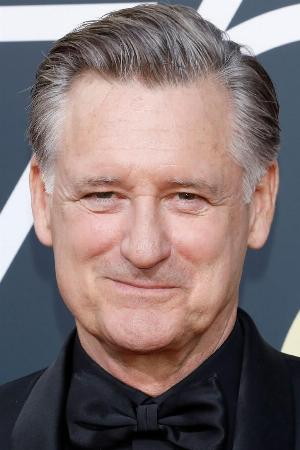

Reparto
Denzel Washington - Robert McCall

Ex agente con un pasado misterioso que busca e imparte justicia.
Chloë Grace Moretz - Teri

Joven en problemas que inspira a McCall a actuar.
Marton Csokas - Teddy

Principal antagonista, miembro de la mafia rusa.
David Meunier - Slavi

Jefe ruso, en Boston.
David Harbour - Frank Masters

Policía corrupto, ayudante de Teddy.
Melissa Leo - Susan Plummer

Excompañera agente jubilada.
Bill Pullman - Brian Plummer

Excompañero agente jubilado.